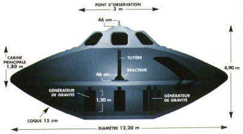

Nom : Robert Lazar, scientifique et homme d'affaires
indépendant.
Déclaration : Avoir travaillé en tant qu'ingénieur en système de propulsion fin 1988 et début 1989
sur un des 9 appareils extra-terrestres étudiés et testés sur l'Espace Aérien de Nellis.
Contexte : Lazar déclare avoir travaillé de au Laboratoire National de Los Alamos, au labo de Physique des Mesons avec un niveau
de sécurité Q. En 1985, alors qu'il était en vacances au Nevada, il se décida à acheter maison de prostitution légale
; l'investissement se révéla si profitable qu'il n'eut pas besoin de retrouver un travail à temps plein pour un
moment. Il partit dans le Nevada en . En , alors qu'il désirait retravailler dans le
milieu scientifique, il fut engagé, d'après ses dires, pour travailler sur le projet top-secret Galileo.
Lazar passa un test de détection de mensonge en , préparé par Georges Knapp, alors présentateur à KLAS-TV, la filiale de CBS au Nevada, pour une série
locale spéciale, "OVNI : La Meilleure Preuve".
L'Histoire :
En 1988, je décidais de regagner la communauté scientifique en envoyais des curriculum vitae à diverses personnes.
Finalement, j'obtins un entretien avec une firme de placement afin de travailler pour le Département des
Renseignements Navals en tant que civil, et je fus engagé au pied levé fin 1988 afin de travailler sur un projet
intégrant des systèmes de propulsion avancés. C'était, à ce moment, tout ce que je savais. Peu de temps après, je
fus convoyé par air avec diverses autres personnes sur la zone 51 (area 51) sur l'Espace Aérien de Nellis. Là, nous fûmes placés dans un bus aux vitres assombries et
conduits à environ 25 km plus au sud près du lac Papoose, entouré des montagnes de Papoose, où se situait une
installation nommée "S4". Je fus présenté à mon superviseur ainsi
qu'à un collaborateur puis reçu tout un ensemble de briefings à propos de divers projets, dont le projet Galileo,
dont le but était l'étude de neufs appareils extra-terrestres de forme discoïdale, récupérés en quelque circonstance
par le gouvernement Américain. Je fus affecté à des tâches d'ingénierie sur le réacteur et sur le système de
propulsion gravitationnelle d'un de ces disques - essentiellement dans le but de déterminer comment il fonctionnait.
Je ne sais pas s'il s'agissait d'une récupération suite à un crash, bien qu'en doutant, parce que le disque
n'apparaissait endommagé en aucune façon. Dans les rapports de briefing figuraient des photographies de divers
disques accompagnées de certaines des informations qu'ils avaient déjà obtenues d'autres ingénieurs de recherche.
J'étais à la fois stupéfait et exalté. Mais partout se trouvaient des gardes très bien armés, et ce lieu n'était
pas, à proprement parler, le type d'environnement où vous pouviez poser toutes les questions qui vous venaient à
l'esprit. La sécurité, en fait, se révélait oppressante. Nous étions escortés partout, même aux toilettes. Et si par
malheur votre badge d'identification n'était pas exactement à sa place, vous pouviez d'être appréhendé par un garde
qui vous tenait en respect, son arme pointée sur votre tête, jusqu'à ce que votre superviseur arrive. Et les gardes,
eux, ne vivaient que pour cela. L'ensemble semblait à certains moments tout simplement surréaliste. Il y avait des
posters du disque sur lequel je travaillais, que j'avais surnommé le Modèle Sport, affichés sur des murs, où l'on
pouvait lire : "Ils sont là". Je ne m'occupais que des sources de puissance et des systèmes de propulsion sur un des
disques, et eu l'occasion de pénétrer dans ce disque en diverses occasions. Il faisait approximativement 4,50 m de
haut et 16 m de diamètre. Il avait une texture d'acier inoxydable gratté ou d'aluminium gratté. Je n'en fis pas
d'analyse et ne sais donc pas s'il s'agissait de métal, mais je pus le toucher et il était froid comme le métal, et
avait l'apparence du métal. Il n'avait aucune jointure physique, aucune soudure, boulons ou rivets, et semblait
comme moulé par injection.

A l'intérieur se trouvaient de tout petits sièges, bien trop petits pour permettre à un homme moyen de s'y asseoir
confortablement. Je me cogna la tête à l'extrémité de l'appareil, ce qui me permis de conclure que le plafond
s'incurvait à l'intérieur jusqu'à une hauteur inférieure à 1,80 m. Il n'y avait d'angle droit nulle part dans
l'appareil. Tout était agencé en courbes douces. Le réacteur, qui produisait de l'antimatière et réagissait avec la
matière dans une réaction d'annihilation, ne faisait que 45 cm de diamètre, 30 cm de hauteur, et était situé au
centre du disque. (...). La façon dont il accélérait les protons en son sein, dont la chaleur était convertie en
électricité, était totalement harmonieuse sans aucune perte de chaleur ni énergie latente. C'était phénoménal,
approchant une efficacité dynamique de 100 %. Cela semble aujourd'hui impossible lorsque vous regardez les lois de
la thermodynamique. Tout ce que je puis dire est que cette technologie se situe bien au-delà de tout ce que nous
pouvons savoir en ce vingtième siècle. Le réacteur était alimenté avec un élément non trouvé sur la Terre. Une
partie de ma contribution à ce programme fut de trouver où cet élément se trouvait dans la classification périodique
des éléments. En fait, je ne pu le situer nulle part, aussi nous le plaçâmes au numéro atomique 115. Une théorie
stipula à une époque que les éléments autour de 113, 114 et 115 pourrait devenir stables et non-radioactifs, et
c'était apparemment ce à quoi nous étions confrontés. L'élément 115 est un élément stable, mais avec certaines
propriétés intéressantes. Il peut être utilisé dans le réacteur en tant que carburant, mais également en tant que
source de champ d'énergie accédée et amplifiée par les amplificateurs gravitationnels de l'appareil. En d'autres
mots, l'appareil était à la fois alimenté en carburant et propulsé par les vertus de l'élément 115. Il y avait une
réserve de disques d'élément 115 de la taille d'un dollar argent dont des parts triangulaires étaient coupées et
mise dans le réacteur. Il était d'une teinte orange-cuivre et extrêmement lourd. Bien qu'étant non radioactif, nous
le supposions composé d'un matériau toxique et le manipulions en conséquence. Dans tous les disques situés à S4 se
trouvaient trois amplificateurs gravitationnels positionnés en triade à la base de l'appareil. Ils constituaient le
dispositif de propulsion. Ce qu'ils faisaient étaient essentiellement d'amplifier les ondes gravitationnelles en
déphasage avec celles de la terre. L'appareil fonctionnait en deux modes - omicron et delta, indiquant combien
d'amplificateurs gravitationnels étaient utilisés. Dans la configuration omicron, seul un amplificateur était
utilisé ; les deux autres étaient basculés et rentrés à l'intérieur du disque. En mode omicron, les appareils
pouvaient s'élever et effectuer un vol stationnaire mais pas grand chose d'autre. Pour quitter l'atmosphère, par
contre, les trois amplificateurs gravitationnels devaient être activés et dirigés dans la direction voulue. En fait,
les appareils ne voyagent pas selon un mode linéaire. Nous déterminions que les disques produisaient plutôt leurs
propres champs gravitationnels afin de distordre l'espace-temps et d'attirer en fait leurs destination vers eux. Un
après-midi, mes collègues et moi nous rendîmes à l'extérieur, sur le lac. Le disque sur lequel je travaillais, le
Modèle Sport, avait déjà été sorti du hangar et commençait à s'élever. A part un léger sifflement, il ne faisait
aucun bruit. Il s'éleva jusqu'à une hauteur de 10 m environ. Le sifflement cessa et il se mit à flotter simplement
dans les airs, se déplaçant à gauche, à droite. C'était absolument incroyable. L'information est compartimentée de
telle manière que ce fut là toute l'information et l'expérience auxquelles que je fus autorisé à accéder, bien que
nous eûmes, à certains moments précis et courts, l'occasion de lire des rapports de briefing détaillant d'autres
aspect de ce projet. Les rapports que je lus concernant les systèmes de puissance et de propulsion étaient précis,
ce dont je me rendis compte en travaillant moi-même sur le système. Je pus mettre en relation ce que je savais être
vrai et ce que je pu lire dans les autres rapports de briefing. Sachant tout cela, je lus des rapports sur l'origine
de ces disques. D'après l'un des rapports, il provenait du système stellaire Zeta Reticuli. N'étant évidemment pas
allé à ce système dans un appareil, je ne saurais dire s'il venait vraiment de là. Je ne parla à aucun
extra-terrestre ni n'en vis aucun, et ne sais donc pas non plus s'ils existent ou non. Le rapport indiquait
également qu'un contact avait été effectué à une certaine date ; cependant, toutes les dates étaient codées. De
plus, toujours d'après ce rapport, ces êtres avaient indiqué à nos représentants officiels qu'ils venaient ici
depuis 10000 ans, que les humains étaient le produit d'une évolution externe contrôlée, et qu'ils étaient
entièrement responsable de l'évolution accélérée de l'homme. Ma tolérance à la sécurité intensive diminua
rapidement. Parce qu'ils surveillaient mes communications téléphoniques 24h/24, ils apprirent que j'avais des
problèmes de couple et me dirent que cette situation faisaient de moi un candidat à "l'instabilité émotionnelle".
Ils me confisquèrent alors ma carte d'accès et me dirent que je pourrais en bénéficier à nouveau dans six mois. Je
connaissais alors le planning des tests, et ne pu résister à montrer à des amis, une nuit et à distance, ce sur quoi
j'avais travaillé. Nous traversâmes le désert et observèrent un vol de test. Cela nous marqua à tel point que nous
ne pûmes résister à revenir, encore et encore. Cependant, la troisième fois, nous fûmes arrêtés par les gardes de la
Sécurité de Wackenut et fûmes emmenés au Bureau de Gestion du Territoire entourant la zone. Inutile de dire que les
officiers de Nellis étaient plutôt mécontents. Je fus débrieffé. J'eus peur et sentis qu'il était temps pour moi
d'arrêter tout cela tant que j'en avais encore la possibilité. Je croyais non seulement que cette technologie devait
être communiquée à la plus haute communauté scientifique, mais aussi que ma seule protection était de dévoiler cette
histoire. Un ami me convint de parler à George Knapp de KLAS-TV. Je me dis que s'ils me tuaient, cela ne pourrait
que prouver que ce que je disais était vrai. Beaucoup de scientifiques considèrent qu'il ne peut exister aucun
disque extra-terrestre ici et que les extra-terrestres n'auraient aucune chance de venir ici en particulier, en
raison de la trop grande distance à parcourir, de l'énergie nécessaire, et qu'il n'existe aucun chemin assez rapide
même à la vitesse de la lumière. Ce que j'ai décris est ce que j'ai vécu, bien qu'à certains égards je regrette de
l'avoir rendu public. Si c'était à refaire, j'adopterai sans doute une attitude plus disciplinée.
Aujourd'hui : Lazar, en 1990, après avoir été écarté du projet Galileo selon ses déclarations,
accepta un travail d'indépendant pour mettre en place un système de fichier et de surveillance pour une maison de
passe illégale de Las Vegas. Ce travail ajouta à son casier 6 crimes dont proxénétisme et incitation à la
prostitution, gestion d'une maison de prostitution , et vie avec les revenus d'une prostituée. Les charges furent
rapidement muées en un seul crime d'incitation au vice. L'un des bons côtés de ce jugement,indique Lazar, réside dans
le fait qu'on ne le suit plus - du moins à sa connaissance. Je suppose qu'ils ont considéré que le jugement
d'incitation au vice m'a discrédité commente-t-il. Lazar vit aujourd'hui des revenus de ses deux petites
compagnies, un firme indépendante de réparation d'appareillages nucléaires et un laboratoire photo. Il construit et
effectue également des courses de jet carset, chaque année depuis 1984, le week-end précédent le 4 juillet, il
organise le Feu d'Artifice du Désert, qu'il décrit comme le plus grand feu d'artifice illégal de tout l'ouest.
Cette extravagance pyrotechnique annuelle comprend d'énormes feux d'artifices et explosions de bombes de gaz fabriqués
parLazar et ses amis ainsi que des démonstrations de jet cars et de petites armes semi-automatiques. Lazar a récemment
vendu les droits de son film et travaille sur un film en videocassette.
Réponse officielle : La réponse de Air Force est qu'il n'y a aucun commentaire à faire sur quoi
que ce soit à propos de l'Espace Aérien de Nellis, indique le Sergent-Maître de l'USAF J. C. Marcom des Affaires
Publiques. Dans le même temps, d'après le Sergent Technique Henderson des Affaires Publiques, L'Air Force n'a
aucune trace d'un quelconque travail effectué par Lazar à la Base de l'Air Force de Nellis, bien que nous ayons
réunit une grande liste d'investigations à son sujet.
CritiqueNous avons tout à fait établi que Lazar a travaillé à Los Alamos, mais sans savoir ce
qu'il y fit exactement indique Mark Rodeghier. En ce qui concerne l'élément 115,
les physiciens admettent que l'existence d'un tel élément est théoriquement possible, mais que nous ne savons ni le
fabriquer ni simplement le trouver. Que Lazar déclare avoir travaillé avec cet élément n'est donc pas forcément
insensé, mais reste complètement invérifiable. Enfin, il semble en savoir assez pour avoir réellement travaillé dans
la zone 51 ou Dreamland où des appareils secrets sont testés, mais cette histoire reste un mystère ténébreux. En
résumé : C'est impossible à vérifier. Nous n'avons pu, malgré nos investigations, trouver personne pouvant corroborer
les dires de Lazar.